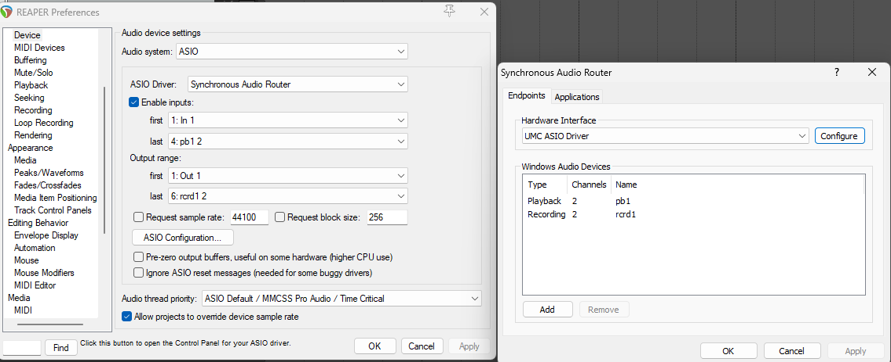
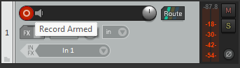

This tutorial will guide you through setting up REAPER and Synchronous Audio Router for routing your audio devices and processing your audio.
Synchronous Audio Router is a program which lets you create virtual ASIO audio devices. You will need either an audio interface with ASIO drivers or use ASIO4ALL, FlexASIO or another alternative to native ASIO drivers.
ASIO (Audio Stream Input/Output) is a low latency driver most audio interfaces use. If you don’t have an audio interface or yours doesn’t have drivers you will need to use one of the aforementioned alternatives
REAPER is a digital audio workstation, DAW for short. This type of software allows you to record, edit and mix your audio. We will use REAPER to route our virtual SAR devices and apply FX to them. REAPER has a 60 day free trial however you are allowed to use it without any limitations in the software. Purchasing the software and supporting the developers is still recommended, the personal license costs $60.
First you will have to install SAR from https://github.com/eiz/SynchronousAudioRouter/releases and REAPER from https://www.reaper.fm/download.php.
DISCLAIMER
As of now, SAR drivers are not signed so you will have to turn off Secure Boot in your BIOS. Here is a guide on how you can do that: https://learn.microsoft.com/en-us/windows-hardware/manufacture/desktop/disabling-secure-boot
Once you have everything installed open REAPER, go to “Options” and click “Preferences” or simply use the CTRL + P shortcut. Under the “Audio” tab click on “Device”. For “Audio system” select “ASIO” and for “ASIO driver” select ”Synchronous Audio Router”. Near the bottom of the windows there is a button that says “ASIO Configuration…”. After clicking on that a new window should open. In this window select your ASIO driver for the “Hardware Interface”, this will be your interface’s drivers or an alternative like ASIO4ALL. Below that there will be a section labeled “Windows Audio Devices”. In this guide we will be processing and routing a single input to another application so you should click “Add” and create 2 devices, one with the “Recording” type and one with the “Playback” type. Name them whatever you want and leave them both at 2 channels. Once you’ve done that go back to the REAPER preferences. For both inputs and outputs there will be 2 dropdown menus labeled “first” and “last”. For the first select the first option and for the last select the last option.
After you’ve done that your settings should look something like this:
Now you need to create a new track. The easiest way to do that is to press CTRL + T. Once you’ve created a track you need to arm it for recording by pressing the red button on it.
Arming a track for recording automatically enables record monitoring. This feature allows you to hear yourself at almost real time and is necessary for the signal to be sent to the master track. But what if you don’t want to hear yourself? To fix this go to “View” and open “Monitoring FX”. Now add any plugin that lets you adjust gain, for example ReaEQ has a gain slider on the right side. Bring gain all the way down and you won’t hear yourself anymore but the signal will still be sent to the master track.
In the mixer (click CTRL + M if you don’t see it) navigate to the master track and click the “Route” button. Click on “Add new hardware output…” and select your SAR device.
You can now apply effects to your input by pressing the FX button on the track.
Everything is now set up, the only thing left to do is to select your SAR device as the input in whatever app you want to use it in.